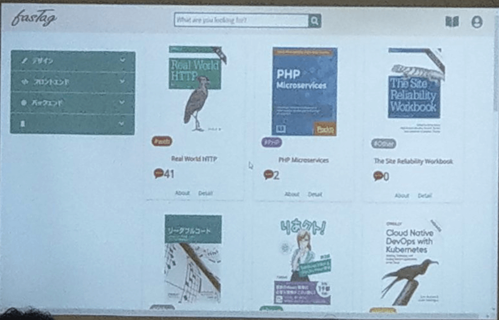
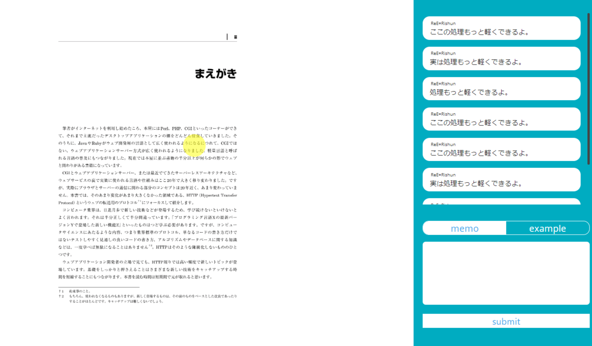
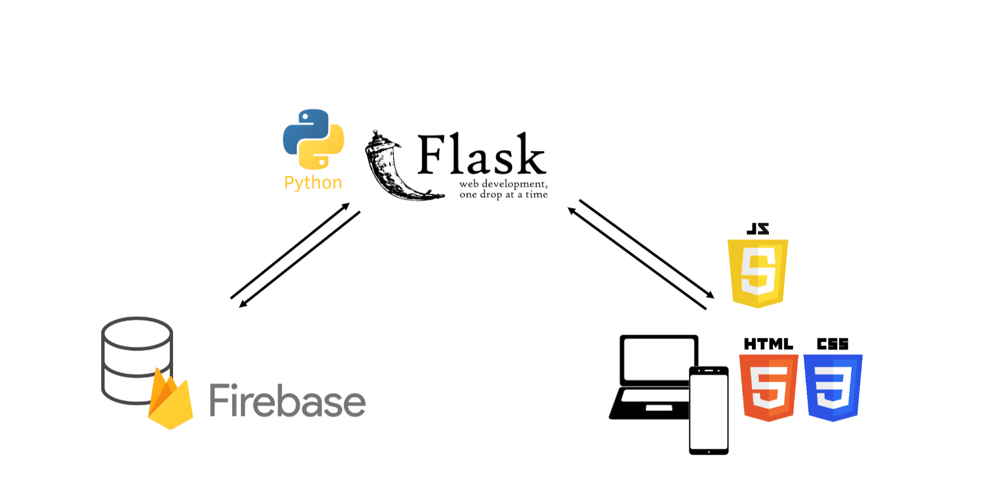

概要
東海地区最大級学生ハッカソンOthloHack2019で製作した、メモの備わった電子書籍サービスです。
期間
2019年11月1日〜11月3日 (３日間)
エイチーム賞受賞

作品紹介
 
使用ツール
illustrator
html
css
jQuery
flask
python
製作過程
現状
専門的な学習をしている人が新しい言語を学ぶ時、以下のことが現状としてあります。
参考書：基礎を体系的に学べる一方で、開発時に情報が足りない、言語のバージョンが古い時があることが問題です。
インターネット：膨大な量の情報がある一方で、答えを見つけるまで時間がかかる、説明が不十分であることが問題です。
課題
初学者が効率よく学ぶ上でこの無駄な時間を解決する
解決
メモの備わった電子書籍サービスで、行き来する行動を短縮します。
機能
これは、既存のサービスと違い、電子書籍に直接書き込みをすることや他の人の書き込みを見ることができ、参考書に沿った適切な情報をこのサービス一つで効率よく学習をできます。
テーマ
わかるを身近に
技術説明
本の情報、コメント情報をfirebaseで管理し、flackとpythonでデータの取り出しを行っています。
